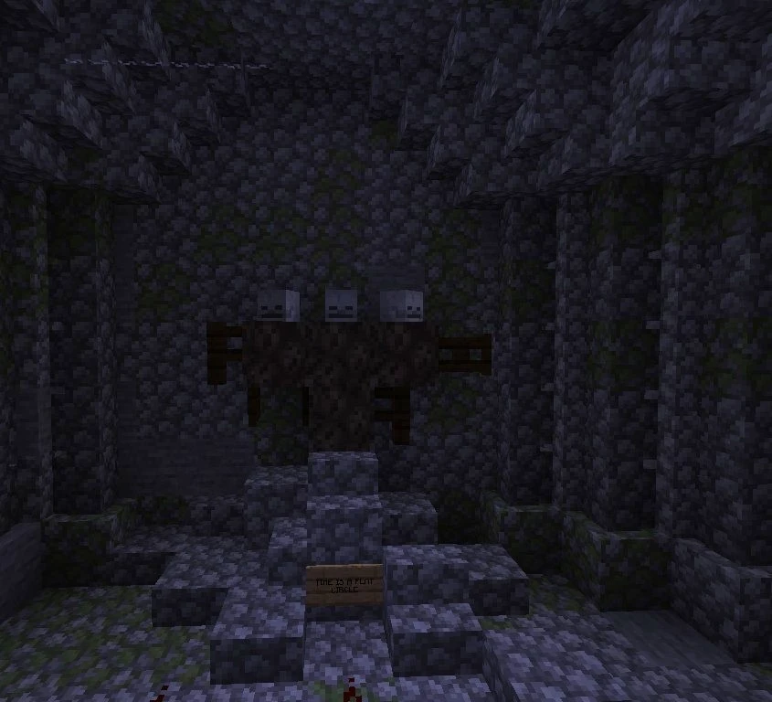

Black Mother
A three-headed figure in the marsh traditions. The origin and details of her cult belong to the community account.
A figure of the marshes
Black Mother is an ancestral mythological entity in the legends of the marshes northwest of Broville. The community account places her in the realm of the dead and associates her appearance with occult rites. Isolated marsh communities, particularly near the castle ruins, are said to have reported rare appearances.
She is described as a powerful three-headed creature, fiercely protective of her eggs and aggressive toward anyone approaching, throwing objects at intruders. The account gives no hatching time for the eggs; these traits belong to the marsh tradition rather than a confirmed reproductive cycle.



The invocation rite
The community description specifies two components:
- Four blocks of soul sand, described as rare but present in marshy areas.
- Three “Black Skulls,” whose exact origin remains mysterious.
The rite involves shaping the entity's physical form with the soul sand, then arranging the skulls to complete the offering and trigger her appearance. The account does not provide a further outcome for the invocation.
See also
Sources and references
- v11.4.4 maps, signs, books and items World records
- Black Mother · Broville Wiki Community archive
Text adapted and expanded from Black Mother (contributors and history, revision 5074). Adapted text is available under CC BY-SA 3.0.